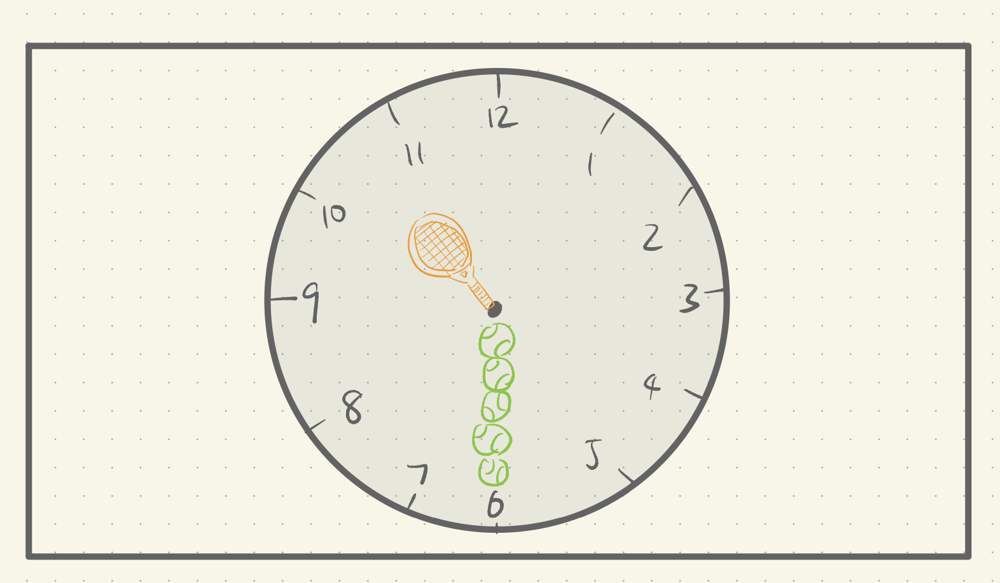
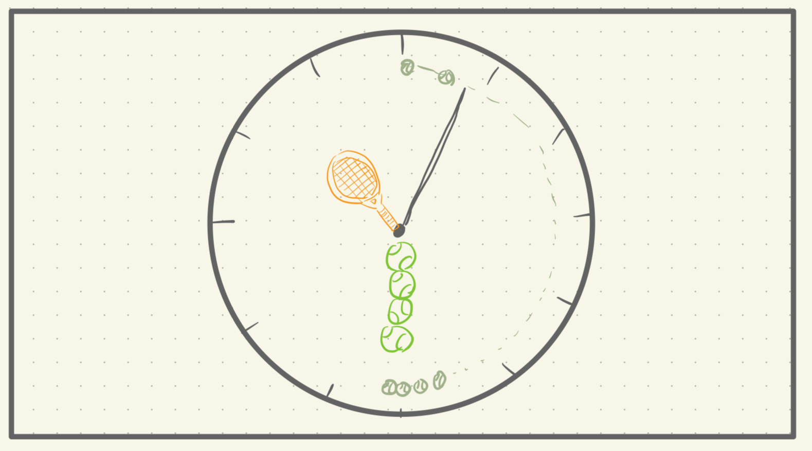
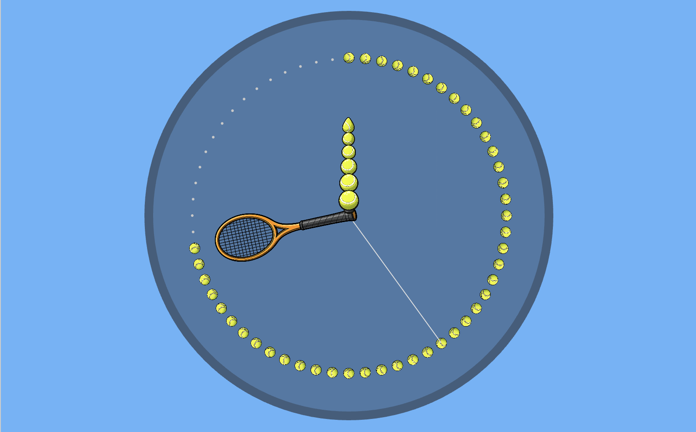
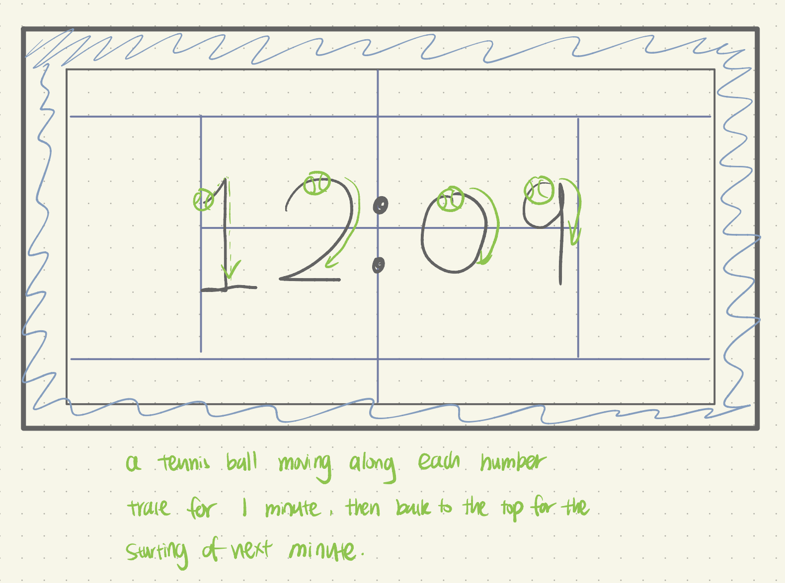
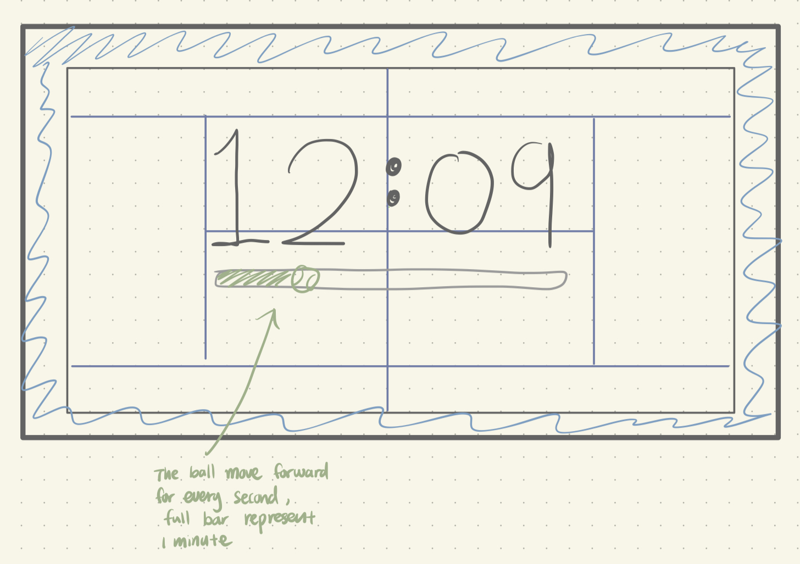
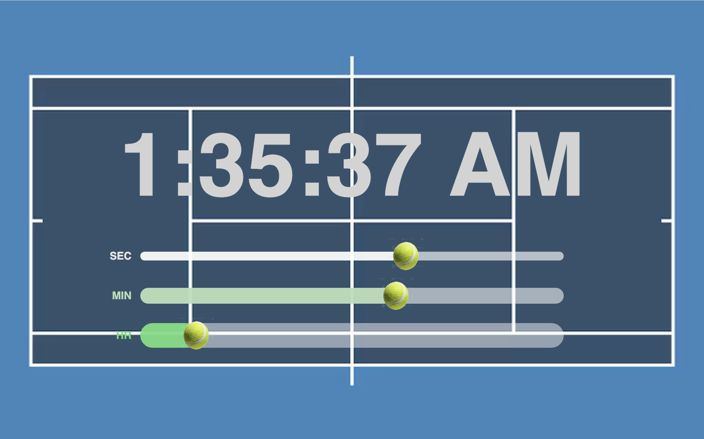
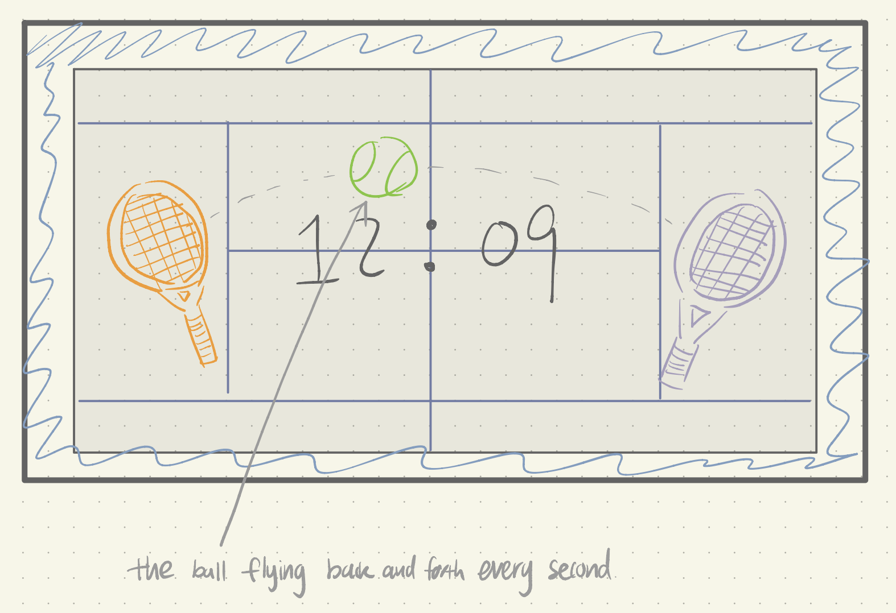
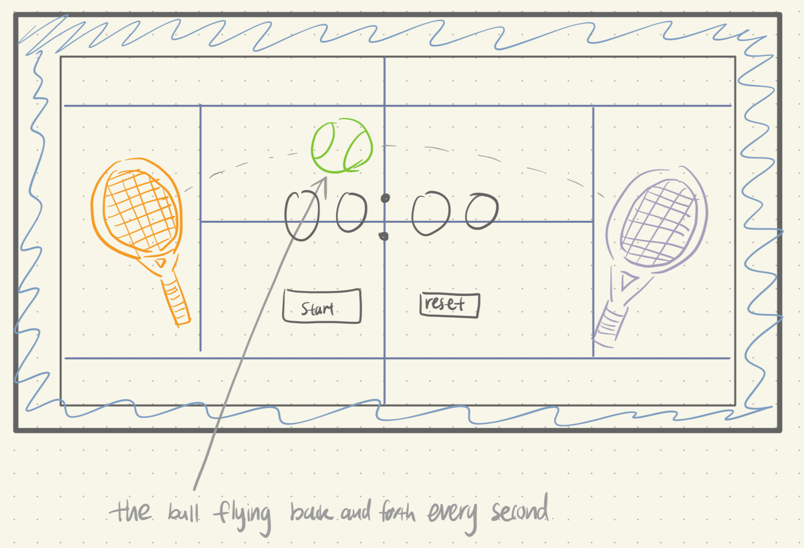
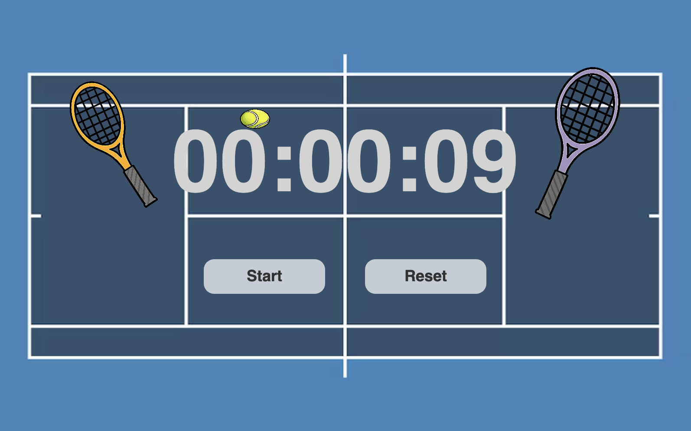

Sketch narrative
This sketch is a themed clock designed for people who like tennis. It turns a regular analog clock into something more playful by using tennis-related elements to show time.
- Context: This clock is meant for tennis players or fans and could be used in places like tennis courts, clubhouses, or practice spaces.
- Design decisions: 1. I used a tennis racket as the minute hand and stacked tennis balls as the hour hand to directly connect the clock to the sport. 2. To show how time passes, a tennis ball appears at each minute tick and stays there until the hour resets, which gives a visual sense of elapsed time instead of relying only on moving hands. 3. The background colors are inspired by tennis courts so the clock feels consistent with its environment.
- Future work: In the future, I would add numbers near the tick marks to make the time easier to read at a glance.
Sketch evolution
Replace these images with your own sketch evolution images.



Sketch narrative
- Context: This is a tennis-themed digital clock for people who like tennis. It could fit on a court display, during practice, or just as a fun clock theme.
- Design decisions: 1.I used a tennis court background so the whole thing reads “tennis” immediately. 2. I used three slider bars (sec / min / hr) because it’s easy to see time moving, not just read numbers. 3. The tennis balls move along each bar so the motion matches the idea of a ball movement.
- Future work: I’d like to add clearer scale marks on each bar (like small ticks) and maybe a tiny “bounce” animation when the ball hits the end.
Sketch evolution
Replace these images with your own sketch evolution images.



Sketch narrative
- Context: This clock is designed for people who love tennis and works well in tennis-related settings like courts, matches, or practice sessions. It focuses more on timing a competition rather than showing the current time.
- Design decisions: 1. I used two tennis rackets hitting a ball back and forth to represent the flow of time, inspired by how rallies work in a real match. 2.Instead of a traditional clock, I chose a stopwatch-style layout since timing a game or drill feels more relevant in a tennis context. The motion of the ball helps make time passing feel active and competitive rather than static.
- Future work: A future improvement would be adding a point counter under each racket so the clock can also track scores during a match or practice.
Sketch evolution
Replace these images with your own sketch evolution images.


